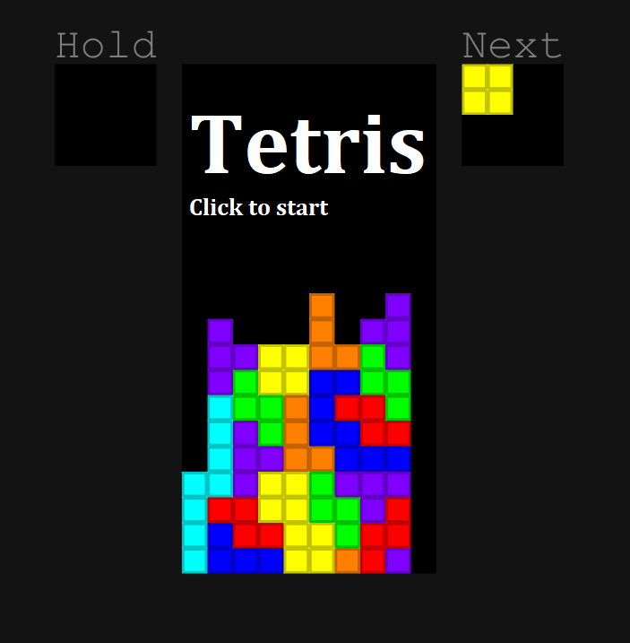

About: Tetris
I wanted to make Tetris, so I did ( ＾v＾)
Got to do something to pass the time in Computer Science...
Anyway, I'm pleased with the result :D
I added the ability to hold a block & fast drop, as well as my own version of the scoring system.
Click the code here to download the main C# file:
Click the code here to download the music toggle C# file:
Normally, I'd show screenshots of the code, but I wrote practically all the code in one file which is 24kB and I'm not concatinating that into one image!
Play: Tetris
Below is an online version of 'Tetris'. Alternatively, the executable version is linked here.
I have also linked the Unity project files for Tetris (which you can move into a Unity project for yourself)
here.
If this does not work for whatever reason, please inform me via my email.
Click the image to start, you can make the game full-screen by pressing the full-screen button :)
Enjoy!


<
Contents:
Click to jump to chapter: